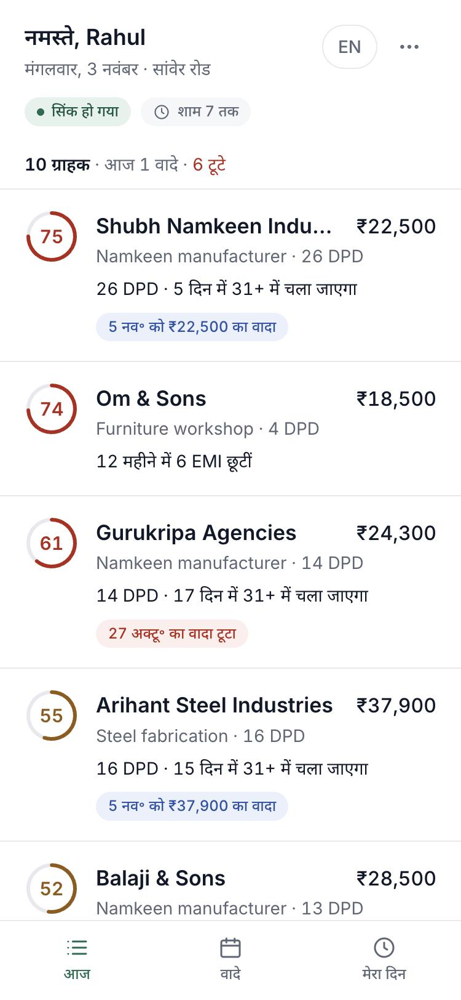
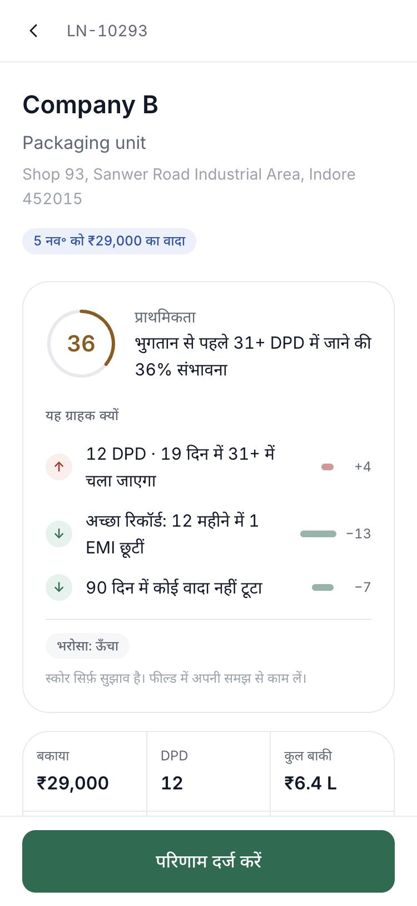
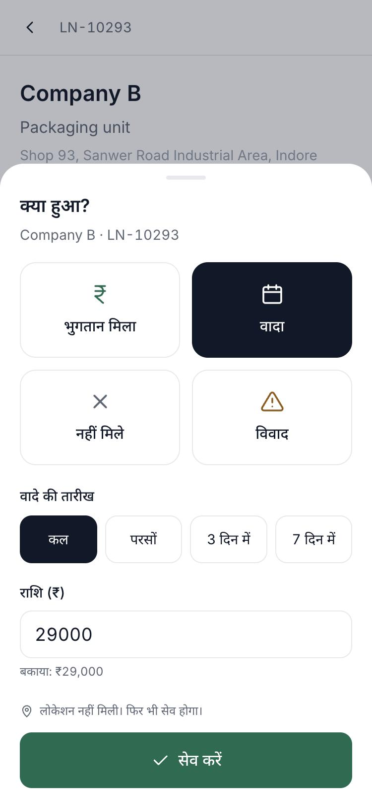
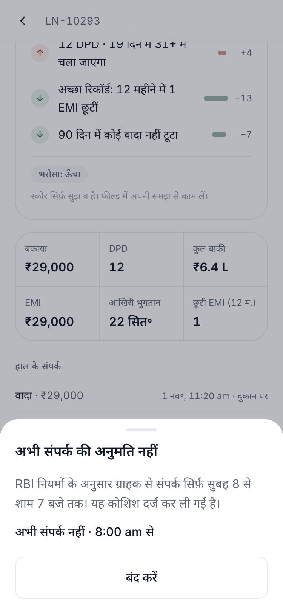
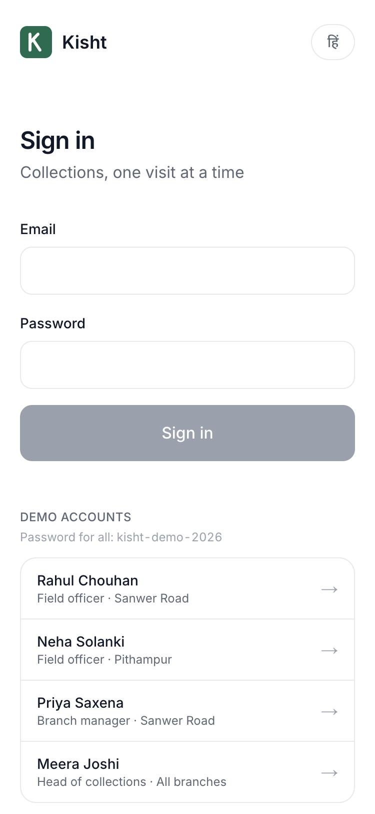
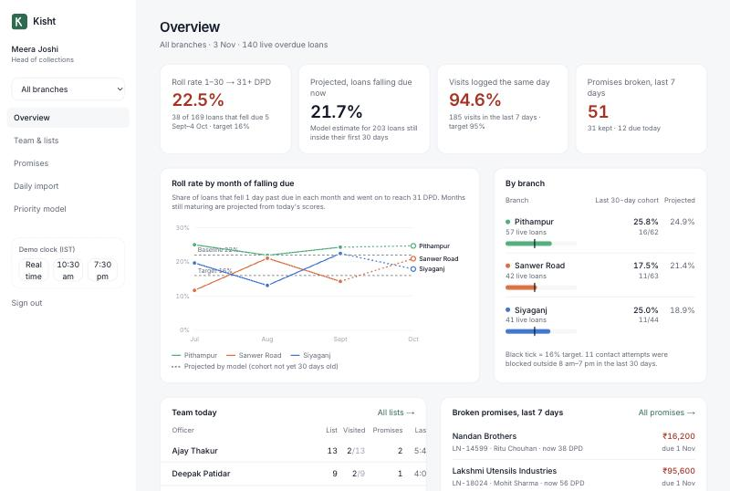
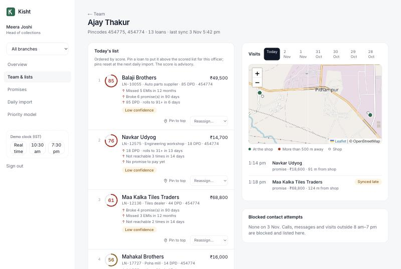
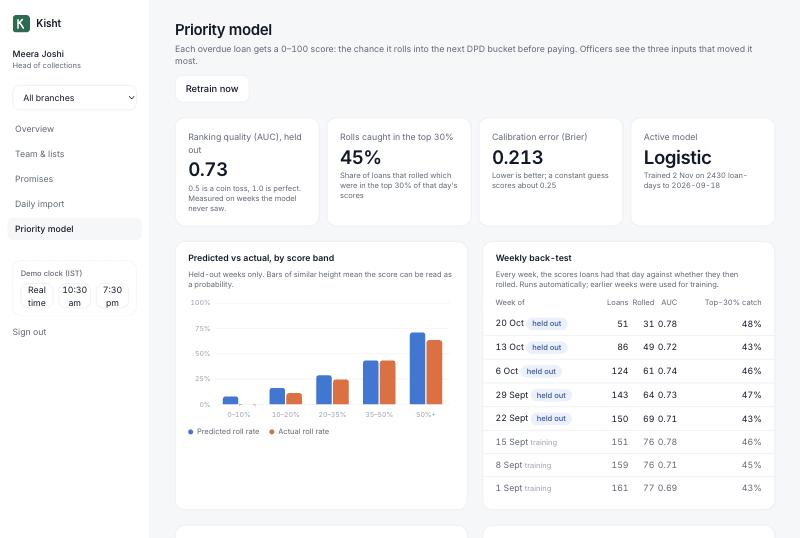
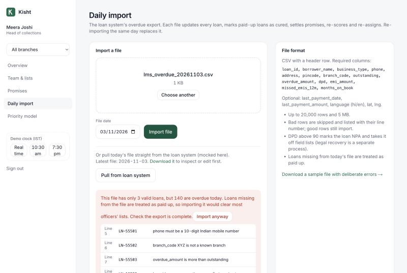

GitHubhttps://github.com/ShubhaNandanTY/kishtLive appLIVE_URL_PENDINGDemo loginsPassword kisht-demo-2026 for all. Officer rahul@kisht.demo, branch manager priya@kisht.demo, head of collections meera@kisht.demo. The sign-in page lists them for one-tap login.AuthorShubhanandan T YRun locallynpm install && npm run setup && npm run dev: no database to install (see deployment.md)
1. What was built
Every morning the loan system's overdue file is imported, each overdue loan is scored for how likely it is to roll into the next DPD bucket, and loans are assigned to officers by pincode and workload. Officers open a Hindi-first phone app that shows who matters most today and why, call or navigate with one tap, and log the outcome in three taps, including with no signal. Contact outside 8 am–7 pm is blocked and every attempt is recorded. Promises to pay are tracked to kept or broken, with reminders. Managers see roll rates by branch the same day instead of in Friday's Excel, can override the model's order, and can watch how the model performs week by week.
Core build requirement
Status
Overdue CSV import and auto-assignment (pincode + workload)
Done. Validated upload with row-level errors, plus a mocked loan-system pull and a 9 am cron. Continuity-first assignment.
Officer priority list, call and map buttons, outcome logging with GPS
Done. Paid / promise / not reachable / dispute in three taps; GPS distance to the shop; late-entry path.
Promise tracker
Done. Open, kept, broken, superseded; officer and manager views; reminders to borrower (SMS, mocked) and officer (in-app).
Manager roll-rate view
Done. By branch and month, matured and model-projected, against the 22% baseline and 16% target.
Roles: field officer and branch manager
Done, plus head of collections (all branches, retraining).
AI priority score with reasons
Done. A logistic regression trained on history, top three reasons per loan, confidence label, weekly back-test, manager override.
Hard part: offline logging with sync
Done. IndexedDB cache and outbox, service worker shell, idempotent sync, server re-validation.
Hard part: 8 am–7 pm contact block
Done. Enforced on the phone and on the server, IST regardless of device timezone, every attempt recorded.
Optional depth from the must-have list
AI-drafted Hindi/English reminders from approved templates with a word filter; officer activity log with a visit map; broken-promise dashboard.
2. Assumptions
The brief leaves these open. Each is labelled, and the code reflects it.
#
Assumption
A1
Roll rate is measured by entry cohort: of the loans that fell 1 day past due in a period, the share that reached 31 DPD. This matches the brief's "450 a month fall 1–30 DPD, 22% roll".
A2
The demo covers 3 branches (Siyaganj, Sanwer Road, Pithampur), 12 officers, 3 branch managers and a head of collections. With about 190 loans falling due a month and roughly 140 live overdue loans, each officer has 9–17 loans, a realistic "short list". Branch names and pincodes are invented.
A3
The loan system's daily export has one row per overdue loan with: loan ID, borrower, business type, phone, address, pincode, branch, outstanding, overdue amount, DPD, EMI, last payment date and amount, missed EMIs in 12 months, months on book, and optionally language and coordinates. Loans missing from the day's file have been paid up.
A4
Loans above 90 DPD are NPA and move to legal recovery (out of scope), so they leave field lists.
A5
A promise is kept if at least 90% of the promised amount is paid between the promise and the day after the promised date (payments show up in the next morning's file). Otherwise it is broken. A new promise replaces an open one.
A6
Contact hours are 8:00 to 18:59 IST, all days. A visit logged after 7 pm is accepted only if the officer states it happened inside the window (flagged as a late entry).
A7
The officer UI is Hindi by default with an English toggle. The manager UI is English (head office works in English Excel today). All borrower-facing messages use the borrower's language.
A8
Payments, SMS/WhatsApp, the loan system and maps are mocked or use free services (OpenStreetMap tiles; Google Maps links for directions). No real message is sent.
A9
All history is synthetic, produced by a documented day-by-day simulation (section 6.1). The three loans in the brief are reproduced exactly, with dates relative to the seeding day (on 3 Nov 2026 they match the brief exactly).
A10
A visit counts as "at the shop" within 500 m, because cheap phones' GPS drifts. Missing GPS never blocks a log (weak signal is the norm); it is flagged instead.
3. Architecture
Why this stack
Next.js (React + TypeScript), one codebase for the officer app, the manager dashboard and the API. For an 8-week, ₹9 lakh budget, one deployable unit and one language beats separate mobile, web and backend projects.
An installable web app (PWA), not native. Officers use low-end Android phones. A PWA needs no Play Store release, updates instantly, and handles offline work with IndexedDB and a service worker. The officer bundle is about 120 kB.
Postgres everywhere, two drivers. Neon Postgres in production; PGlite (Postgres compiled to WebAssembly) locally and in integration tests. Reviewers run it with no database install, and the tests use the real SQL dialect and migrations, not a mock.
Drizzle ORM: typed SQL with readable migrations, light enough for serverless cold starts.
Vercel in bom1 (Mumbai): borrower personal data stays in India (DPDP), low latency for Indore, built-in cron.
The model is plain TypeScript (about 150 lines of logistic regression), not a Python service. At this data size (thousands of rows) it trains in under a second inside the app, so there is no extra service to deploy, secure or pay for, and every number in it can be explained.
One row per overdue loan per daily file. The source of truth for roll rates, model training and the back-test (what the model said on that day versus what happened).
outcomes
id (UUID made on the phone), type, amount, occurred / captured / received times, GPS, distance to shop, flags
Every visit result. The client-generated id makes offline sync idempotent; the three timestamps separate when it happened, when it was typed and when it reached the server.
promises
loan, officer, promised date, amount, status, created / resolved
Promise lifecycle. The resolved time lets features be rebuilt as they were known on any past day (no leakage).
contact_attempts
loan, officer, channel (call/visit/message), time, allowed, block reason
Every contact attempt, including blocked ones: the RBI audit trail.
messages
recipient, channel, language, template, body, status (sent/scheduled/blocked), source (ai/template/system)
Mock SMS and in-app log, and a record of exactly what each borrower was told.
file stats and row errors; model weights and metrics; who did what; role, branch, pincodes, max load
Operations, model governance and DPDP accountability (log-ins, imports, overrides, outcome writes).
5. Main flows
5.1 Daily import → score → assign
The file arrives (upload, mocked loan-system pull, or the 9 am cron). Each row is validated (zod): ID format, 10-digit Indian mobile, 6-digit pincode, known branch, overdue ≤ outstanding, no future payment dates, duplicates, spreadsheet-formula prefixes stripped. Bad rows are listed by line and skipped; the rest import.
Guards: a file older than the latest import is refused (no rewinding history). A file covering less than half of today's overdue book is refused unless the manager confirms, because missing loans count as paid up and a truncated export would otherwise wipe every list. Re-importing the same day replaces it, so a corrected file is safe.
Loans are bulk-upserted; missing loans become cured; above 90 DPD become NPA and leave field lists. That day's snapshot is written.
Open promises are settled (kept or broken) from the new payment data and officer-reported payments.
Every live loan is scored, then assigned: keep the current officer if they cover the pincode and have room; otherwise the least-loaded officer covering that pincode, highest scores first; then any officer in the branch with room ("outside territory"); then the least-loaded officer anyway ("over capacity"), so no loan goes unworked. Managers see these notes. Manager pins reset with each import.
5.2 Officer day, three-tap logging and offline sync
On open, the app shows the list cached in IndexedDB immediately, then fetches a fresh one. One response holds everything the day needs (list, reasons, promises, history), so detail screens work with no signal.
Tap 1 Log outcome (GPS starts reading in the background); tap 2 Paid / Promise / Not reachable / Dispute; tap 3 Save. Promise date (tomorrow) and amount (overdue) are prefilled. Notes are optional chips, not typing.
The event, with a UUID, device times and GPS, goes into the IndexedDB outbox and is applied to the screen at once. A sync runs immediately, on reconnect, when the app returns to the foreground, and every 30 s, backing off from 5 s up to 5 min. A 401 pauses sync and asks the officer to sign in again; the queue is never dropped. Sign-out warns about unsynced records, then wipes local borrower data.
The server checks each event on its own: a duplicate id returns "duplicate" (a retry is safe); a loan from another branch is rejected; times are rechecked (below); GPS distance to the shop is computed; a loan reassigned since the phone last synced is still accepted (the visit happened) but flagged. A new promise supersedes the open one in the same transaction.
5.3 The 8 am–7 pm rule
On the phone: the header shows whether contact is allowed. Call and Send reminder outside the window show the RBI reason, and the attempt is queued and recorded. Logging after 7 pm asks when the contact happened (8:00–18:59 only).
On the server (authoritative): all checks use IST, not the device timezone. Attempts are judged by the server, whatever the phone claims. Contacts outside the window are rejected and stored as blocked attempts. Device times more than 10 minutes in the future (a manipulated clock) and records older than 7 days are rejected. Late entry, next-day logging and late sync are flagged for the manager. Reminder sends are checked at send time.
Demo clock (only when DEMO_MODE=true): lets a reviewer set the app to 10:30 am or 7:30 pm IST to see both states at any hour. Phone and server shift together.
5.4 Promises and reminders
The 9 am job sends the borrower an SMS the day before and on the promised day (mocked), and gives the officer an in-app reminder on the day. If it runs outside the window, messages are scheduled for 9 am instead of sent. Broken promises (no qualifying payment by the grace day) appear on the officer's Promises tab, on the loan card, as a reason in the model, and on the manager overview.
5.5 Roll rate without waiting for Friday
Roll rate by entry cohort (A1) is computed from the daily snapshots by branch and month. A cohort is "matured" once its last loan has had 30 days to roll. For cohorts still maturing, the dashboard shows a projection: loans that have already rolled plus the model's probability for each loan still open. Managers see this month's likely roll rate today, drawn dashed so it is never mistaken for an actual. Seeded baseline: 22.5% over the last matured 30 days (169 loans), against the brief's 22% and the 16% target.
6. How the AI works, and what happens when it is wrong
6.1 Priority score
Question the model answers: "Will this loan cross into the next bucket (31, 61 or 91 DPD) before it is paid?" Score = that probability × 100. The question has urgency built in: a 27-DPD loan has 4 days to pay, a 5-DPD loan has 26, so the score rises naturally as the boundary nears. It is also the event that drives the client's KPI.
Inputs (11): DPD; days to the next bucket; days since last payment; missed EMIs in 12 months; broken and kept promises in 90 days; not reachable in 14 days; open dispute; promise pending; outstanding amount (log); months on book. These cover the brief's "DPD, payment and promise history and amount".
Model: L2-regularised logistic regression on standardised inputs, trained on replayed history. Every feature is rebuilt as it was known on that day (a promise counts as broken only after it was known to be broken), so there is no leakage. Sign constraints stop correlated inputs from producing reasons that read backwards: for example, a missed EMI can only raise risk. This cost under 0.01 AUC.
Reasons: for each input, the exact change in score if that input were at the portfolio average (not a rule of thumb). The top three are shown in plain Hindi or English, e.g. "27 DPD · rolls to 31+ in 4 days", "Broke 2 promises in 90 days", "Promise to pay pending ↓". DPD and days-to-bucket merge into one reason.
0.73
AUC on held-out weeks (out of time)
45%
of loans that rolled were in the top 30% of that day's scores
0.213
Brier score (constant guess ≈ 0.25)
2,430
training loan-days; tested on 1,391 later ones
Where the history comes from (A9):src/server/demo/simulate.ts replays 150 days of the book for about 2,300 loans. Each borrower has a hidden risk factor the app never sees; EMIs fall due monthly, officers visit, borrowers promise, pay, part-pay, become unreachable, cure or roll, and loans go NPA after 90 DPD. Only part of the hidden risk shows through observable behaviour (missed EMIs, broken promises, reachability, recent part-payments), so the model has to learn it the way it would from real data. The simulation is tuned to the brief's 22% roll rate. These numbers come from that synthetic data. They show the pipeline works end to end and is measured honestly. They are not a claim about Company A's real borrowers; the weekly back-test would measure that from the first month of real use.
When the score is wrong or unsure:
It is advisory. The card says so; officers can visit in any order and every reason is visible.
Confidence labels:low for new loans (under 6 months), unusual inputs (more than 4 standard deviations from the training data) or no trained model; medium when nothing has been logged for 30 days. Shown on the officer card and in the manager list.
Managers override by pinning, reordering or reassigning (audited, reset daily).
Weekly back-test on the model page: each week, the scores loans had that day against whether they rolled, with AUC, top-30% capture and calibration bands. Training and held-out weeks are marked.
Retrain with a no-regression gate: the head of collections can retrain on all history. The new model goes live only if its held-out AUC is at least as good (within 0.01), so a bad batch of data cannot quietly make lists worse.
No model? Hand-set starting rules are used and every score is marked low confidence.
6.2 AI-drafted reminders
Four borrower templates (overdue, promise due tomorrow, promise due today, missed promise) and one officer template, in Hindi and English. These are the "approved templates". The server offers only those that are true for the loan today; for example, "due tomorrow" is never offered for a promise due today.
If ANTHROPIC_API_KEY is set, Claude (claude-opus-5-5, low effort, server-side refusal fallback) rewrites the filled template more warmly, with instructions to keep every fact and never threaten.
Every draft, AI or template, must pass checkDraft: a Hindi and English blocklist (police, court, legal action, family, neighbours, warning, पुलिस, कोर्ट, परिवार, धमकी, वरना…; Hindi matching ignores the nukta, so ज़ब्त = जब्त); the exact rupee amount; the promised date and no other date; the loan ID; no links; no new phone numbers; 360 characters at most. On any failure the AI text is discarded, the approved template is shown, and the officer sees why.
Drafts are signed (HMAC). The send endpoint only accepts text the draft endpoint produced, so nothing else can be sent through the API. Nothing sends without the officer's tap, and sends are blocked and recorded outside 8 am–7 pm.
Tested with a mocked model: a faithful rewrite is used; a threatening one and one with a changed amount are both rejected and fall back to the template.
7. Security, privacy and compliance
Area
What the app does
Sign-in and roles
bcrypt passwords; HS256-signed httpOnly, SameSite cookie (7 days, so a day offline does not log an officer out); login throttling (5 failures per 15 min per email and IP); timing-safe handling of unknown emails. Middleware guards pages; every API route checks its role.
Access control
Officers see and log only their branch's loans (drafts and sends only their own assigned loans). Branch managers see only their branch, enforced on the server, not just in the UI. Only the head of collections can retrain.
Input validation
zod on every API body and CSV row; file size and type limits; per-event validation in sync batches; the cron endpoint requires a secret (timing-safe compare).
Secrets
None in the repository; .env.example lists names only. The demo password is a documented demo value, replaced by SEED_PASSWORD.
DPDP Act 2023
Data minimisation (officers get only their own list); phone numbers masked in the reminder preview; borrower data wiped from the phone on sign-out; India-region hosting; an audit log of log-ins, imports, outcome writes, overrides and retrains. All demo data is invented.
RBI fair practices
Contact-hour enforcement on both client and server, an attempt log including blocked attempts, threat-free approved message templates, and no auto-dialler or legal language (out of scope).
8. UI and design decisions
The brief asks for minimal design and one-handed use. Rules used everywhere: one accent colour (deep green), with red and amber only for meaning (risk, broken promises, blocked contact); white space instead of boxes; Inter plus Noto Sans Devanagari with extra line height for Hindi matras; tap targets of at least 44 px (outcome tiles 96 px); everything an officer needs sits in the bottom half of the screen.

Today. A short list ordered by score. One reason per row (the one that moved it most), the overdue amount, and a promise chip. Sync and contact-hour status sit at the top.

Why this borrower. Score as a plain-language chance, three reasons with ↑/↓ and their weight, a confidence label and an "advisory" note. Facts the officer asks about at the shop.

Three taps. A bottom sheet within thumb reach, four large tiles, prefilled date and amount. GPS status is shown but never blocks saving.

Blocked, explained, recorded. After 7 pm a call is not placed; the officer sees the RBI reason and when contact reopens.

Sign-in. Language toggle before sign-in; demo accounts (demo mode only) for reviewers.
States. Every screen has loading, empty ("no borrowers on your list"), error with retry, stale ("showing the list saved at 6:25 pm") and offline states. Charts follow a validated colour-blind-safe palette with legends, direct labels and hover tooltips, and draw at the device's real width so text stays legible on phones.

Overview. The four numbers the CEO's success criteria name (roll rate, projected roll rate, same-day logging, broken promises), then roll rate by branch and month against target and baseline. Projected months are dashed.

An officer's day. The list with reasons and pin/reorder/reassign; visits on a map joined to each shop, with flags (far from shop, synced late, late entry).

Model. Held-out quality in plain words, predicted versus actual by score band, the weekly back-test, the weights, and how wrong scores are handled.

Import. Row-level errors with line numbers, and the partial-file guard that stops a truncated export from clearing every list.
9. Testing
69 automated tests (Vitest), run with npm test:
Unit (54): contact window and IST handling, offline time checks (late sync, late entry, future clock, too old); assignment (territory, balancing, continuity, overflow, capacity); CSV (normalisation, row errors, duplicates, formula stripping, missing columns); promise evaluation (grace day, part payment, cure, officer-reported payment); roll-rate cohorts and projections; feature leakage; AUC; training learning the right directions; reasons and confidence; templates passing their own filter; Hindi and English blocklists; draft checks (amount, date, link, phone, loan ID); sync batch validation.
Integration (15) on in-memory Postgres with the real migrations: idempotent sync and retry, promise superseding, 7 pm rejection with the attempt recorded, server-side attempt verdicts, far-from-shop flag, branch access, import with assignment, partial-file guard, cures and NPA, no rewinding, signed drafts (tampered text rejected), reminders blocked after 7 pm, other officers' borrowers refused, AI rewrite accepted or rejected (mocked model).
Manual in the browser: three-tap logging, blocked call, offline logging with the server stopped and automatic sync on recovery, pin/reorder, import errors, at both phone and desktop widths.
10. What I cut, and what I would do next
Cut or simplified
Real SMS/WhatsApp, loan-system and payment integrations (mocked, as the brief allows).
A native Android app and Play Store distribution (a PWA instead).
Background Sync API (not on iOS); foreground retries cover the same ground.
Hindi for the manager screens (officer screens and borrower messages are bilingual).
User administration screens: officers, pincodes and caps are seeded.
Login throttling is per server instance; production would use a shared store.
Next
Pilot with one branch for 4 weeks; replace synthetic history with 6–12 months of real exports and retrain; publish the real back-test.
SFTP pull from the loan system, and a WhatsApp Business API provider with DLT-registered templates.
An "expected loss" lens next to the roll score (probability × outstanding × 0.20 × 0.35) for the head of collections.
Consent records and a data-retention job (DPDP), plus encryption of the on-device cache.
Measure the 4-month success criteria: roll rate 22% → 16%, 95% same-day logging, weekly Excel stopped.
11. Honest limits
Model quality is measured on simulated data. The simulation hides a "true" risk factor per borrower and lets only part of it show through observable behaviour, so the model has something real to learn. Real-world performance is unknown until real data is back-tested.
The device clock can still be wrong in the past direction, within 7 days. That is flagged, not proven; a stronger version would sign server time when the day's list is fetched.
GPS on low-end phones can be off by hundreds of metres, so "far from shop" is a prompt for a conversation, not proof of a missed visit.
The local embedded database allows one process at a time, so stop the dev server before reseeding. Production uses Neon and has no such limit.
Business case from the brief, for reference: 27 fewer rolls a month × 12 × ₹35,000 = ₹1.134 crore, plus ₹49.5 lakh of manual reporting time, ≈ ₹1.63 crore a year against a ₹9 lakh build.